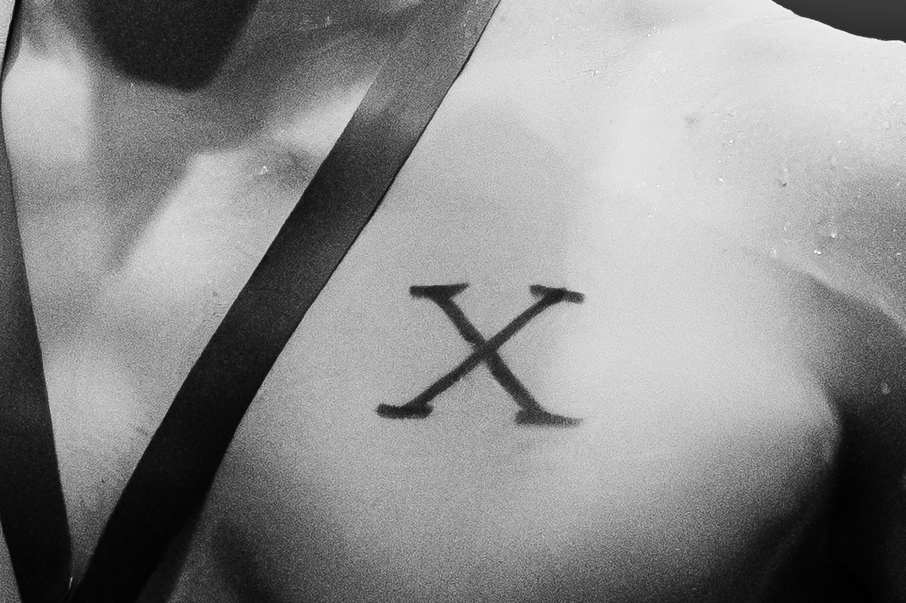

Game Coverage
Live sports photography capturing real moments, action, and atmosphere.
Sports Photography • Creative Services
Services
This page combines the services I offer with the required jQuery interactions. The goal is to keep the page functional while still making it feel like part of the portfolio.
Live sports photography capturing real moments, action, and atmosphere.

Promotional graphics and visual content built for athletes and teams.

Coverage focused on emotion, identity, and the moments around the result.
Use the button below to show or hide extra information.
I create sports content for social media, school athletics, athlete branding, and event coverage. That includes live action, portraits, graphics, and documentary-style storytelling.
This section uses another jQuery interaction to slide the list open and closed.
Enter your name below to preview a simple response using jQuery.